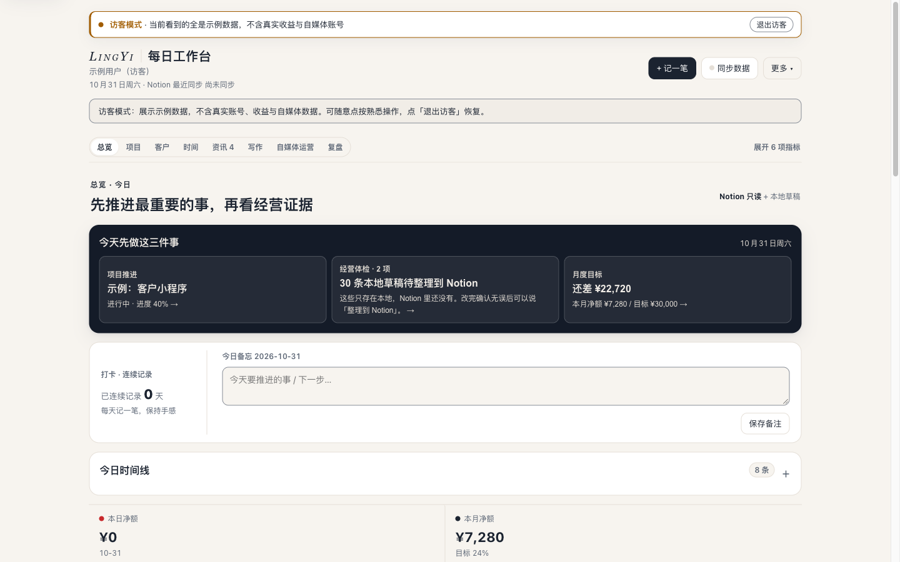
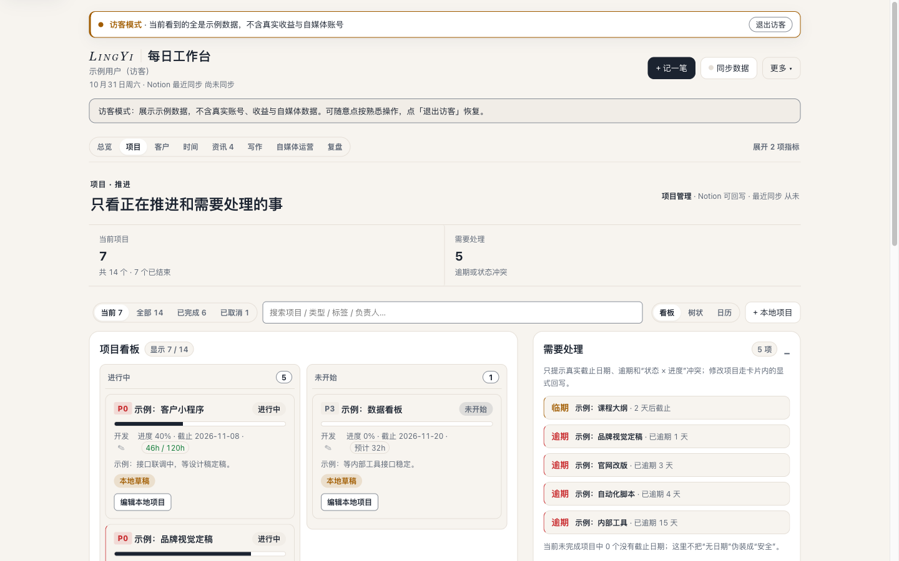
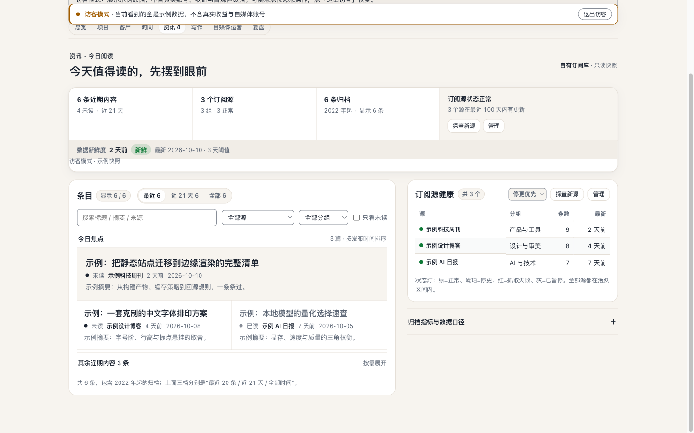
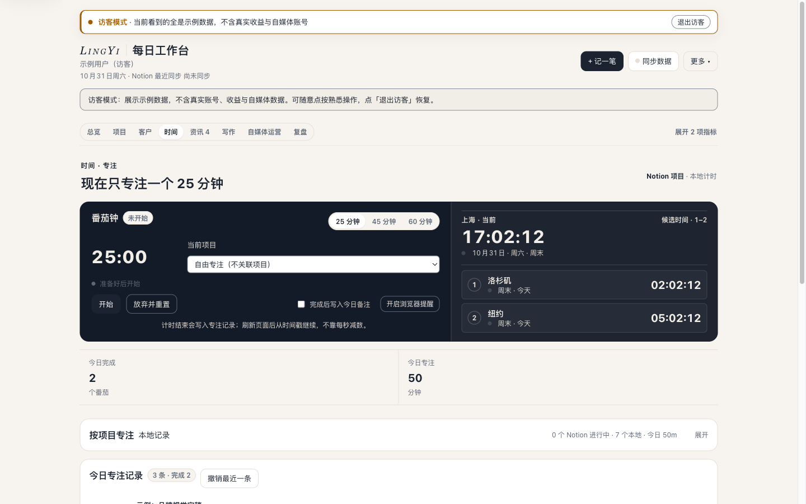

本地优先的个人经营工作台
数据只读拉取自 Notion，回写走白名单动作，草稿与计时只存本地。 一个页面看清楚：收益、项目、客户、时间、资讯、写作、自媒体运营与复盘。
八个页面
今天先做什么、经营体检、月度目标与当日时间线，一眼定优先级。
看板 / 树状 / 日历三种视图，逾期与状态冲突直接标出，可回写 Notion。
客户跟进、需求与收款节奏，跟进记录与 Notion 数据库联动。
番茄钟专注、按项目工时与世界时钟，计时记录可单条回写。
订阅源健康检查、未读优先的今日阅读队列，阅读排版对齐博客。
Obsidian 式草稿箱：本地写作、版本可回收，写完再同步。
公众号、知识星球等渠道的内容表现与更新节奏，集中管理。
按周 / 月生成复盘文档，复用资讯阅读排版预览，沉淀到 Notion。
截图




快速开始
git clone https://github.com/Jascenn/daily-workbench.gitpython3 app.py（仅依赖标准库）不配置 Notion 也能直接用：首次打开可进入访客模式，全部展示示例数据， 与真实账号、收益和自媒体数据完全隔离。